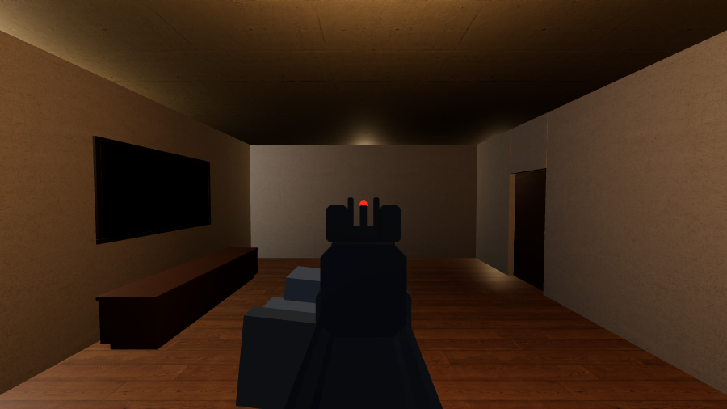
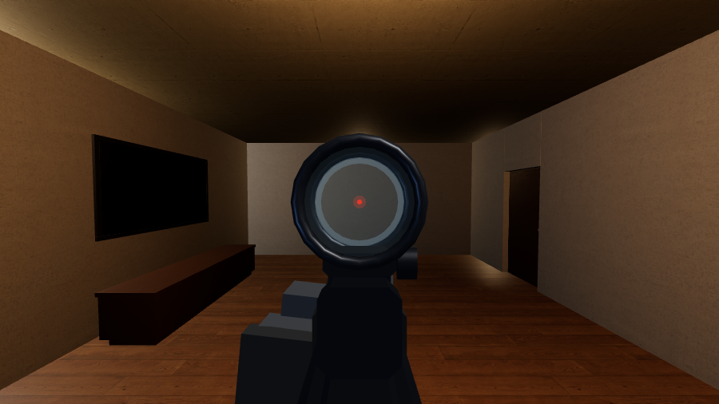
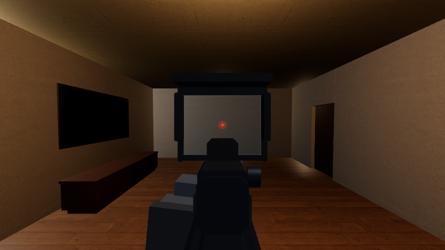
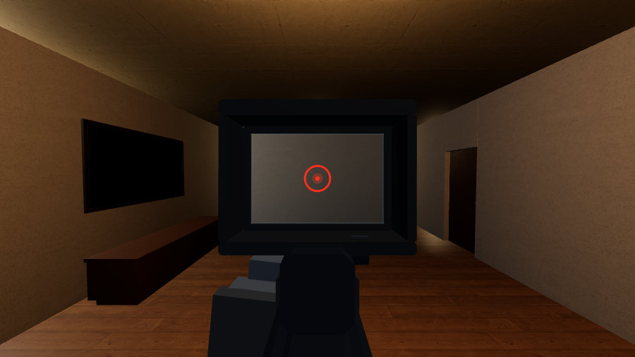
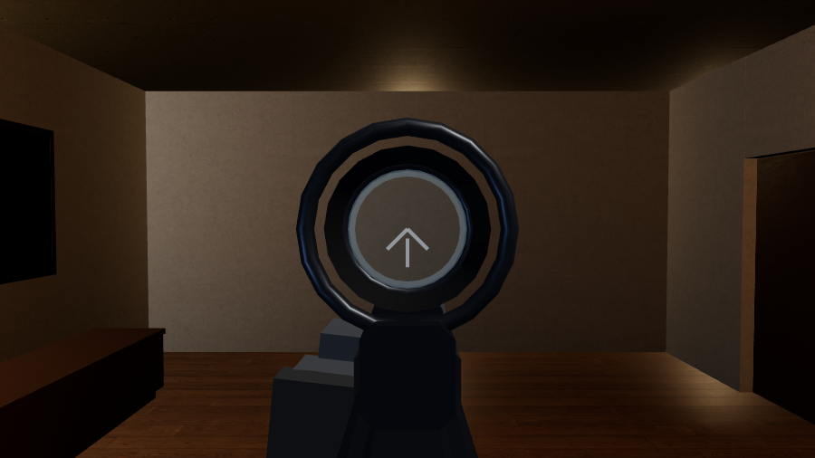
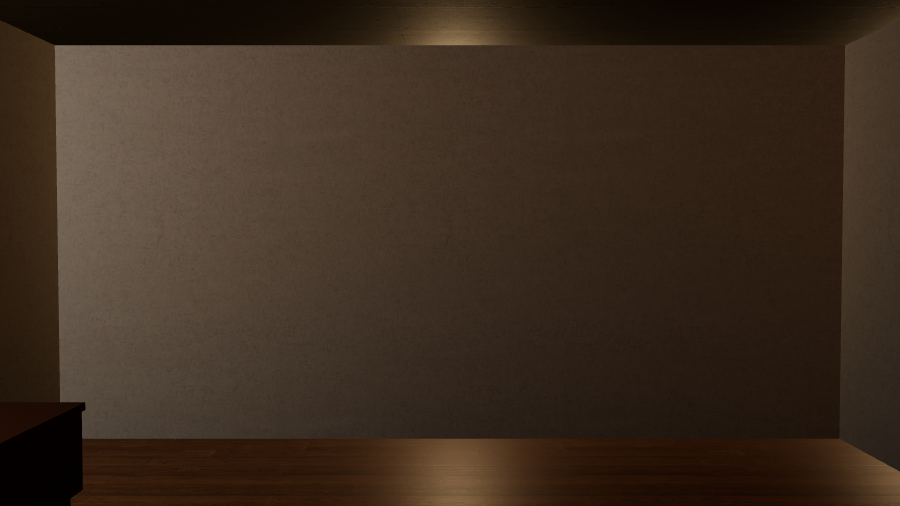

Что можно поставить на планку и как это выглядит через прицельное окно. Снимки сделаны в самой игре с одного и того же места, при полностью поднятом прицеле. Ни одна цифра здесь не написана руками: они читаются из той же таблицы, по которой работает игра.
Прицел не меняет ни урона, ни разброса, ни отдачи. Он решает, что вы видите и сколько времени уходит на вскидку — увеличение стоит времени, механика экономит его.

Мушка и целик. Ничего не заслоняет, вскидывается быстрее всего.

Труба с точкой. Стекло защищено, окно узкое.

Открытая рамка, самое широкое окно. Видно, что происходит вокруг метки.

Квадратное окно, кольцо с точкой. Кольцо само находит силуэт в проёме.

Ближе на треть, метка вытравлена на стекле. Дороже по времени вскидки.

Марксманская труба. В коридоре мешает, через двор — решает.